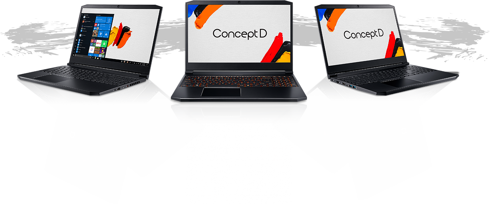

<!doctype html>

<html lang="es">

<head>
    <meta charset="utf-8">
    <title>Acer</title>
    <meta name="description" content="Publimetro Samsung landing">
    <meta name="author" content="Iniciativa">
    <meta name="viewport" content="width=device-width, initial-scale=1">
    <link href="https://fonts.googleapis.com/css2?family=Comfortaa:wght@300;400;500;700&display=swap" rel="stylesheet">
    <link rel="stylesheet" href="https://cdnjs.cloudflare.com/ajax/libs/animate.css/4.0.0/animate.min.css" />
    <link href="https://unpkg.com/aos@2.3.1/dist/aos.css" rel="stylesheet">
    <link rel="stylesheet" href="dist/css/styles.css?v=1.0">

</head>

<body>
    <main>
        <!--opening-->

        <section class="hero" id="hero">
            <div class="hero__inner">
                <div class="hero__image" data-enllax-ratio=".3" data-enllax-type="foreground"
                    data-enllax-direction="vertical">
                    
                </div>
                <div class="hero__content animate__animated animate__bounceInDown">
                    <h1 class="hero__title ">ConceptD 5</h1>
                    <p>Precisión para crear
                        <span>contenidos potentes</span></p>
                </div>

                <div class="floating-item" data-enllax-ratio="-0.4" data-enllax-direction="vertical"></div>
                <div class="floating-item2" data-enllax-ratio="-0.4" data-enllax-direction="vertical"></div>
                <div class="floating-item3" data-enllax-ratio="-0.4" data-enllax-direction="vertical"></div>

            </div>

        </section>


        <section class="section section--centered">
            <div class="section__inner">
                <p data-aos="fade-up" data-aos-duration="1000">Antes era imposible trabajar de manera remota, pero ahora
                    gracias a computadores como el <span class="text--orange">ConceptD 5</span>, es posible estar en
                    cualquier lugar y crear contenido de calidad.</p>

                <p data-aos="fade-up" data-aos-duration="1000"> De hecho, gracias a que el <span
                        class="text--orange">ConceptD 5</span> tiene tecnología Intel® Core i5, i7 e í9, es ideal para
                    diseñadorescreativos, y creadores de contenidos.</p>
                

                <p data-aos="fade-up" data-aos-duration="1000">Y es que cuando se está en un proceso creativo, lo
                    último que se quiere es sufrir por problemas tecnológicos. Este computador te permite que los
                    colores, las imágenes, los sonidos, el movimiento, y la magia, conviertan las ideas en una realidad.
                </p>

            </div>
        </section>

        <section class="section">
            <div class="section__inner">
                <div class="section_3col">
                    <div class="col" data-aos="fade-up" data-aos-duration="1000">
                        <h2>¿Qué puedes lograrcon este computador?</h2>
                        <p>Transferir archivos de imagen a altas velocidades. Renderizar gráficos sin interrupciones.
                        </p>
                    </div>

                    <div class="col" data-aos="fade-up" data-aos-duration="1000">
                        <h2>Velocidad y precisión</h2>
                        <p>Cuenta con procesadores Intel® Core i5, i7 e í9 de 9na generación con los cuales se logra
                            potencia, además de gráficos precisos.</p>
                    </div>
                    <div class="col" data-aos="fade-up" data-aos-duration="1000">
                        <h2>CIFRAS</h2>
                        <p>Con estos procesadores puede realizar una edición de video en 4K hasta un 54% más rápida.
                            Tener un rendimiento hasta un 33% más rápido.</p>
                    </div>
                </div>

                <div class="splash-bg">
                    
                    
                </div>
            </div>
        </section>


        <section class="section background--grey">
            <div class="section__row section__row--full">
                <div class="section__col image-full">
                    
                </div>


                <div class="section__col content-full">
                    <div class="content content-left">


                        <h2 class="section__title" data-aos="fade-up" data-aos-duration="1000"
                            data-aos-anchor-placement="top-center">¡Una máquina a todapotencia!</h2>
                        <p data-aos="fade-up" data-aos-duration="1000" data-aos-anchor-placement="top-center">Cuenta con
                            una pantalla 4K validada por Patone® y una relación de pantalla a cuerpo del 80%, debido a
                            los marcos de 6,22 mm de grosor.</p>
                        <p data-aos="fade-up" data-aos-duration="1000" data-aos-anchor-placement="top-center">El
                            ConceptD 5 apuesta claramente por ofrecer los componentes más avanzados para garantizar
                            rendimiento en este terreno, incluida una generosa pantalla de 15 o 17 pulgadas que agradará
                            a diseñadores y creativos.
                        </p>

                        
                    </div>

                </div>
            </div>

        </section>

        <section class="section backgroundOne">

            <div class="section__inner">
                <div class="section__content" data-aos="fade-up" data-aos-duration="1000" data-aos-anchor-placement="top-center">
                    <div class="section__row">
                        <div class="section__col">
                            <p>Incorpora gráficos <strong>Radeon RX Vega M GL</strong>.</p>

                            <p>Tiene un poderoso chasis metálico con una aleación de magnesio y aluminio y un peso de
                                <strong>1,5 kilogramos</strong>, lo cual resulta cómodo si de llevarlo en desplazamiento
                                hablamos.</p>

                            <p>En cuanto a la configuración de memoria, se añaden <strong>32GB</strong> de memoria RAM y
                                1TB de almacenamiento SSD.
                            </p>
                        </div>

                        <div class="section__col">
                            
                        </div>
                    </div>
                </div>
            </div>
        </section>

        <section class="background-half-grey">

            <div class="section__inner content--centered">
                <h2 class="section__title" data-aos="fade-up" data-aos-duration="1000" data-aos-anchor-placement="top-center">
                    Estética envidiable
                </h2>

                <p data-aos="fade-up" data-aos-duration="1000" data-aos-anchor-placement="top-center">El <strong>chasis
                        de metal</strong> esculpido demuestra un diseño atemporal que es ideal para los creadores que
                    necesitan trabajar en lugares novedosos. </p>
                <a href=""></a>
            </div>

            <div data-aos="fade-down" data-aos-duration="1000" class="floating-item4">
                
            </div>

            <div data-aos="fade-down" data-aos-duration="1000" class="floating-item5">
                
            </div>

        </section>

        <section class="section section-six">

            <div class="section__inner">
                <div class="section__content">
                    <div class="section__row">
                        <div class="section__col" data-aos="fade-up" data-aos-duration="1000"
                            data-aos-anchor-placement="top-center">
                            <p>- Los portátiles <span class="text--orange"><strong>ConceptD</strong></span> tienen un
                                teclado <strong>retroiluminado en color ámbar</strong>.</p>
                             <p>- <strong>El trackpad y su teclado</strong> en tonos blancos hacen juego con el resto
                                del chasis, con una gran área táctil para manejar y desplegar gestos con los dedos.</p>
                             <p>- En esta ocasión además se añade un puerto <strong>USB tipo C,</strong> un DisplayPort
                                y lector de huellas dactilar.</p>

                            <p>- Incluye un <strong>sistema térmico optimizado</strong> con un ventilador1a generación
                                que funciona a <strong>menos de 40 dBA</strong> (el equivalente a una sala de
                                biblioteca)</p>
                        </div>

                        <div class="section__col">
                            
                        </div>
                    </div>

                </div>

            </div>

            <div class="floating-item6">
                
            </div>
        </section>


        <section class="section background--grey section-seven">
            <div class="section__inner content--centered">
                <h2 class="section__title">¿Dónde comprar?</h2>
                <p>En Alkosto y Ktronix podrá encontrar este compañero perfecto para hacer volar la creatividad y obtene
                    un beneficio único.
                </p>
                <a href="" class="btn">Compre aquí</a>

                <div class="links-logos">
                    <a href="" target="_blank"></a>
                    <a href="" target="_blank"></a>
                </div>
               
            </div>
        </section>


        <section class="section section-eight">
            <div class="section__row section__row--full">

                <div class="section__col content-full ">
                    <div class="content content-left">


                        <h2 class="section__title" data-aos="fade-up" data-aos-duration="1000"
                            data-aos-anchor-placement="top-center">¡Una máquina a todapotencia!</h2>
                        <p data-aos="fade-up" data-aos-duration="1000" data-aos-anchor-placement="top-center">Cuenta con
                            una pantalla 4K validada por Patone® y una relación de pantalla a cuerpo del 80%, debido a
                            los marcos de 6,22 mm de grosor.</p>
                        <p data-aos="fade-up" data-aos-duration="1000" data-aos-anchor-placement="top-center">El
                            ConceptD 5 apuesta claramente por ofrecer los componentes más avanzados para garantizar
                            rendimiento en este terreno, incluida una generosa pantalla de 15 o 17 pulgadas que agradará
                            a diseñadores y creativos.
                        </p>

                    </div>

                </div>

                <div class="section__col image-full">
                    

                </div>
            </div>

        </section>


    </main>
    <script src="https://cdnjs.cloudflare.com/ajax/libs/jquery/3.5.1/jquery.min.js"></script>
    <script src="dist/js/jquery.enllax.min.js"></script>
    <script src="https://unpkg.com/aos@2.3.1/dist/aos.js"></script>
    <script src="dist/js/scripts.js"></script>
</body>

</html>